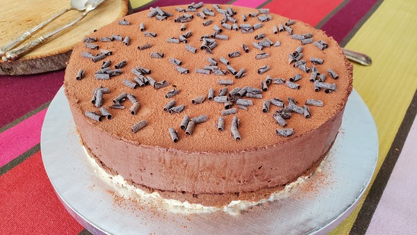

Royal Chocolat

Le Royal Chocolat, appelé aussi Trianon (je ne sais pas pourquoi), est un dessert composé d’un biscuit à l’amande, d’un croustillant praliné et d’une mousse au chocolat.
Il y a deux façons de réaliser la mousse. Soit avec un mélange d’œufs montés avec du sucre où l’on ajoutera de la crème fouettée et du chocolat. Soit avec de la crème montée et du chocolat. J’aime autant que possible réduire le sucre dans mes recette, c’est pourquoi j’ai choisi la recette de la mousse au chocolat avec unique de la crème fouettée. Par contre le croustillant est assez épais pour avoir un maximum de goût praliné. Je n’ai mis qu’un seul disque de biscuit dacquoise, donc si vous préféré avoir une épaisseur de biscuit en plus un peu moins de mousse il faudra soit faire 2 fois la quantité de la recette de dacquoise, soit diviser la quantité pour obtenir des disques dacquoise moins épais et donc le cuire moins longtemps.
J’ai opté pour une finition simple avec un saupoudrage de poudre de cacao amer. Encore une fois cela permet d’avoir moins de sucre dans ce dessert.
Dacquoise
Croustillant praliné
Mousse au chocolat noir
Finition
Four: 170°C
Temps de cuisson : 15 à 19 minutes
Temps de préparation : 2 jours et 1 nuit
2 jours avant la dégustation réalisez la dacquoise. 1 jour avant la dégustation réalisez le Royal Chocolat. Le lendemain vous pourrez le déguster.
Conseil : Préparez de préférence le biscuit dacquoise 1 jour avant de préparer l’entremet, afin que le biscuit soit un peu plus ferme. Entourez-le de film transparent pour qu’il garde son moelleux.
Laissez votre crème fleurette au réfrigérateur une nuit ainsi que le mascarpone. Si vous avez oublié de le mettre au frais le jour de la préparation, laissez la crème fleurette 1h au congélateur puis 1h au réfrigérateur avant de réalisez votre crème montée.
Le mascarpone ajoute de la matière grasse ce qui permet d’avoir une meilleure tenue lorsque vous monterez la crème liquide au batteur. En général il n’y a pas assez de matière grasse (30%) dans la crème fleurette que l’on achète dans les supermarchés, ce qui empêche une bonne tenue de la crème fouettée.
Pour incorporez la crème montée faite attention à la température du chocolat. Trop chaud (+ 56°C) la crème montée pourrait retomber et trop froid (-45°C) le chocolat pourrait former des paillettes qui ne pourraient plus être incorporées au mélange.


Dacquoise
Recouvrir une plaque à pâtisserie d’un papier de cuisson.
Préparez la poche avec une douille de 1,20 cm de diamètre.
Tamisez la poudre d’amande et le sucre glace et mélangez-les.
Montez au fouet (ou avec un batteur électrique) les blancs d’œufs dans un cul de poule, lorsqu’ils sont mousseux ajoutez en 2 fois le sucre en poudre et continuez de battre jusqu’à former un bec d’oiseau lorsque vous remontez votre fouet.
Versez en 3 ou 4 fois le mélange poudre d’amande/sucre glace sur les blancs. Mélangez en soulevant délicatement avec une maryse/spatule.
Remplir la poche et pochez un disque de 21 cm de diamètre.
Enfournez 15 à 18 minutes. Il faut que le biscuit reste légèrement blanc pour qu’il soit moelleux. S’il est trop cuit il sera sec et cassant.
Sortez du four la dacquoise. Laissez refroidir 5 minutes. Puis recouvrez le biscuit d’un papier cuisson et avec les maniques maintenez des deux côtés la plaque et le papier cuisson, retournez la plaque sur le plan de travail. Posez un linge humide sur le papier cuisson collé au biscuit. Retirez délicatement le papier cuisson. Laissez refroidir la dacquoise.
Retourner la dacquoise entre deux plaques, pour que le dessus du biscuit soit côté visible.
Déposez sur le disque dacquoise le cercle de 20 cm de diamètre et découpez avec la pointe d’un couteau les contours du disque dacquoise. Laissez de côté le disque dacquoise avec le cercle.
Croustillant praliné
Dans une assiette creuse, écrasez les biscuits gavottes avec vos doigts pour obtenir des miettes.
Faites fondre au bain-marie le chocolat au lait.
Ajoutez la pâte praliné et mélangez avec une cuillère à soupe quelques secondes au dessus du bain marie.
Hors du feu, ajoutez les miettes de biscuits et mélangez avec une cuillère à soupe.
Etalez le croustillant praliné pour recouvrir complètement la dacquoise qui se trouve dans le cercle.
Déposez le tout dans le frigo pour le faire refroidir le temps de préparer la mousse au chocolat.
Mousse au chocolat
Faites fondre le chocolat noir au bain-marie.
Dans une casserole faites chauffer légèrement le lait.
Versez en 3 fois le lait sur le chocolat noir (hors du bain marie) et remuer avec une spatule en bois de l’intérieur vers l’extérieur pour que le mélange deviennent lisse et brillant.
Laissez refroidir légèrement le chocolat pour atteindre 55°C.
Pendant ce temps réalisez la crème montée. Versez dans votre cul de poul la crème fleurette et le mascarpone bien froid et fouettez au batteur avec le fouet.
Ajoutez dans le mélange chocolaté 3 cuillères à soupe de la crème montée et mélangez normalement avec la maryse. Puis incorporez avec une maryse en 3 ou 4 fois la crème montée délicatement pour ne pas casser la mousse.
Versez la mousse dans le cercle où se trouve déjà la dacquoise et le croustillant. Avec une spatule plaquez la mousse sur les contours du cercle (pour éviter d’avoir un trou sur les bords du cercle) puis lissez le dessus de la mousse avec la tranche de la spatule.
Laissez refroidir votre Royal au réfrigérateur une nuit. Puis lorsque la mousse aura bien prise vous pourrez retirer le cercle. Vous pouvez aussi le mettre au congélateur une nuit puis le lendemain retirer le cercle en chauffant les contours du cercle avec un linge humide chaud ou un chalumeau.
Pour la finition, saupoudrez de cacao amer à l’aide d’une petite passoire fine.
Option, vous pouvez recouvrir les contours du Royal avec des paillettes de gavottes.
Clic pour agrandir
Restez gourmands et inventifs
Pour les amateurs de chocolat, je conseille du chocolat 70% de cacao pour toute la préparation. Pour ceux qui préfèrent la mousse un peu plus sucrée vous prendrez un chocolat à 50% ou 55% de cacao.
Vous pouvez aussi décorer les contours du Royal avec des copeaux de chocolat. Afin qu’ils tiennent bien à la mousse il faudra sortir votre Royal du réfrigérateur 40 minutes avant de faire ce décor.
{kind=link}